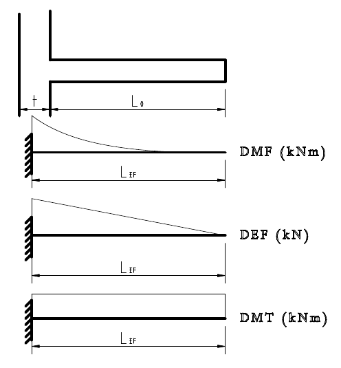
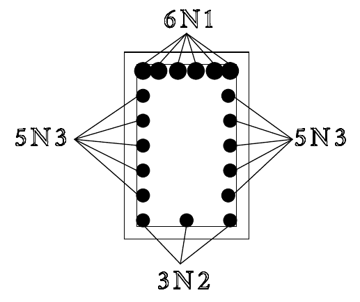
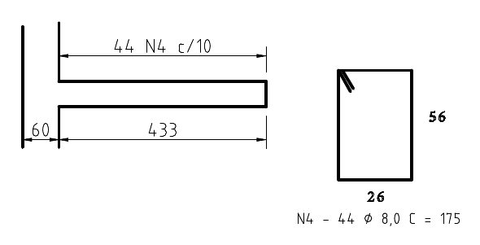

Viga submetida a esforço de torção
Neste tópico será apresentado um exemplo completo de dimensionamento
Exemplo
Dimensionar a viga da figura à torção, considerando os seguintes dados:
Concreto C25, aço CA-50, \(c_{nom} =\) 2 cm, \(T_k\) = 20 kNm, \(M_k\) = 130 kNm, \(V_k\) = 100 kN, \(d_{máx =}\) 19 mm, \(L_{ef}\) = 415 cm, \(h = \) 50 cm, \(b_w\) = 30 cm, \(d = \) 45 cm.

Esquema da viga e respectivos diagramas
Solução
Além das armaduras dedivo à torção, também é necessário determinar as armaduras de flexão e de forção cortante. Consdere que estas armaduras já foram calculadas e estão listadas abaixo.
Efeito de flexão
\[ A_s = 10{,}46 \text{ cm²}\]
Efeito de cisalhamento devido à força cortante
\[ \frac{A_{sw}}{s} = 3{,}08 \text{ cm²/m} \]
Efeito de cisalhamento devido à torção
\[ T_{sd} = \gamma_f \cdot T_k = 1{,}4 \cdot 2000 = 2800 \text{ kNcm} \]
Verificação das diagonais comprimidas
Área da seção transversal:
\[ A = b_w \cdot h = 30 \cdot 50 =1500 \text{ cm²} \]
Perímetro da seção transversal:
\[ u = 2 (b_w + h) = 2(30+50) = 160 \text{ cm} \]
Limite da espessura equivalente:
\[ h_e \le \frac{A}{u} = \frac{1500}{160} = 9{,}375 \text{ cm} \]
\[h_e \ge 2 c_1 \]
Onde \(c_1\) é a distância até o centóide da primeira armadura longitudinal. A determinação do diâmetro das armaduras ainda não foi feito, portanto será considerado \( \phi_l = 12{,}5 \) mm e \( \phi_t = 8 \) mm. Assim:
\[ c_1 = \phi_l/2 + \phi_t + C_{nom} = 1{,}25/2 +0{,}8 + 2 = 3{,}425 \text{ cm}\]
\[h_e \ge 2 c_1 = 2 \cdot 3{,}425 =6{,}85 \text{ cm} \]
Portanto, o valor adotado será a média entre os dois valores anteriores:
\[ h_e =(6{,}85+9{,}375)/2 = 8{,}11 \text{ cm} \]
Os valores de área efetiva e perímetro efetivo serão:
\[ A_e = (b_w-h_e)\cdot(h-h_e) = (30-8{,}11) \cdot ( 50-8{,}11 = 916{,}81 \text{ cm²} ) \]
\[ u_e = 2[ (b_w-h_e) + (h-h_e)] = 2 [(30-8{,}11)+(50-8{,}11)] = 127{,}55 \text{ cm} \]
A parcela resistente à torção relativa ao esmagamento das diagonais do concreto, será:
\[ T_{Rd2} = 0{,}5 \Bigg( 1- \frac{f_{ck}}{250} \Bigg) A_e \cdot h_e \cdot sen(2 \theta) \]
É importante que o ângulo da biela de compressão \( \theta\) seja o mesmo ângulo considerando no dimensionamento à força cortante.
Logo:
\[ T_{Rd2} = 0{,}5 \Bigg( 1 + \frac{25}{250} \Bigg) 916{,}81 \cdot 8{,}11 \cdot sen(90°) = 5976{,}68 \text{ KNcm} \]
Para que não ocorra o esmagamento das bielas:
\[ \frac{V_{sd}}{V_{Rd2}} + \frac{T_{sd}}{T_{Rd2}} \le 1 \]
\[ \frac{140}{586} + \frac{2800}{5976{,}7} = 0{,}71 \]
Portanto, pela avaliação acima, não ocorrá o esmagamento das diagonas do concreto.
Armaduras mínimas
\[ f_{ctm} = 0{,}3 f_{ck}^{2/3} = 2{,}56 \text{ MPa} \]
\[ A_{sl,mín} = \frac{f_{ctm}}{f_{ywk}} h_e = \frac{ 20 \cdot 0{,}256}{50} \cdot 8{,}11 = 0{,}0083 \text{cm²/cm}= 0{,}83 \text{ cm²/m} \]
\[ A_{90l,mín} = \frac{f_{ctm}}{f_{ywk}} b_w = \frac{ 20 \cdot 0{,}256}{50} \cdot 30 = 0{,}0308 \text{ cm²/cm} = 3{,}08 \text{ cm²/m} \]
Armaduras necessárias
Armadura longitudinal
\[ \frac{A_{sl}}{u_e} = \frac{T_{sd}}{2 A_e f_{ywd}} = \frac{2800}{2 \cdot 916{,}81 \cdot (50/1{,}4)} = 0{,}0351 \text{ cm²/cm} \]
Armadura transversal
\[ \frac{A_{s90}}{s} = \frac{T_{sd}}{2 A_e f_{ywd}} = \frac{2800}{2 \cdot 916{,}81 \cdot (50/1{,}4)} = 0{,}0351 \text{ cm²/cm} \]
Distribuição das armaduras longitudinais
O valor das armaduras longitudinais de torção devem ser distribuídas igualmente ao longo do perímetro da seção transversal da viga. A distribuição ficará conforme abaixo:
Face Inferior
- De flexão: 0 cm²
- De torção: \(A_s = (b_w-h_e)A_{sl} = (30-8{,}11) \cdot 0{,}0351 = 0{,}768 \text{ cm²} \)
- Total: \(A_{s,total} = 0{,}768 \text{ cm²} \)
Faces laterais
- De flexão: 0 cm²
- De torção: \(A_s = (h-h_e)A_{sl} = (50-8{,}11) \cdot 0{,}0351 = 1{,}471 \text{ cm²} \)
- Total: \(A_{s,total} = 1{,}471 \text{ cm²} \)
Face superior
- De flexão: \(10{,}46\) cm²
- De torção: \(A_s = (b_w-h_e)A_{sl} = (30-8{,}11) \cdot 0{,}0351 = 0{,}768 \text{ cm²} \)
- Total: \(A_{s,total} = 11{,}23 \text{ cm²} \)
Distribuição das armaduras transversais
Importante lembrar que para a força cortante, a contabilização é para, no mínimo, 2 ramos, enquanto que para a torção o valor considera apenas um ramo do estribo. Assim, considerando um ramo dos estribos:
\[ \frac{As,tot}{s} = \frac{A_{s,1ramo}}{s} + \frac{A_{s,90}}{s} = 0{,}0308/2 + 0{,}0351 =0{,}0505 \text{cm²/cm} = 5{,}05 \text{ cm²/m} \]
Disposições construtivas
Para a armadura longitudinal, será adotado diâmetros de 6,3 mm nas faces inferior e laterais e de 16,0 mm na face superior, pois o diâmetro de 12,5 mm dava uma quantidade muito grande de barras.
Armadura longitudinal inferior:
\[ A_{6,3} = 0{,}311 \text{ cm²} \]
\[ n = 0{,}768/ 0{,}311 = 2{,}47 \cong 3 \text{ barras} \]
Armaduras longitudinais laterais
\[ n = 1{,}471/ 0{,}311 = 4{,}72 \cong 5 \text{ barras} \]
Armadura longitudinal superior
\[ A_{16} = 2{,}01 \text{ cm²} \]
\[ n = 11{,}23/ 2{,}01 = 5{,}59 \cong 6 \text{ barras}\]
Verificando os valores de número máximo de barras por camada na seção da viga, constata-se que é possível colocar até 6 barras de 16 mm por camada na largura da viga de 30 cm. Com base nessa verificação e na de espaçamento mínimo vertical (2 cm), a distribuição de barras longitudinais na viga fica conforme figura seguinte:

Distribuição das armaduras longitudinais
Para a armadura transversal, lembrando que os cálculos anteriores foram feitos considerando 1 ramo e que os diâmetro precisam ser maiores que 5 mm e maiores que \(b_w/10 = 30/10 = 3\) cm (30 mm), será conforme os cálculos seguintes.
Para os estribos, optou-se por utilizar diâmetro de 8 mm, uma vez que diâmetro de 6,3 mm resulta em um espaçamento muito pequeno.
\[ A_8 = 0{,}502 \text{ cm²} \]
\[ s = 0{,}502/0{,}0505 =9{,}94 \text{ cm} \]

Detalhamento dos estribos